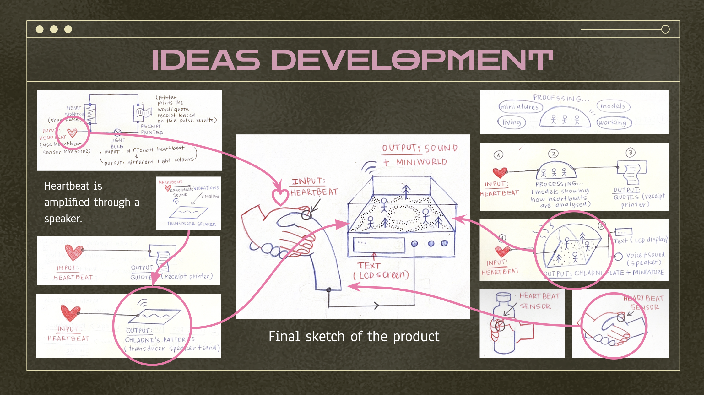
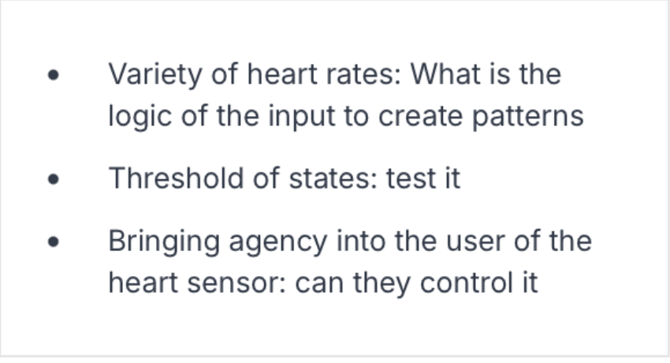

FINAL PROJECT PITCH & PLAN

View reflection
FINALLY! We shared our crazy ideas with the class!!
FEEDBACK & IMPROVEMENTS

View reflection
We received plenty of valuable constructive feedback during this week’s presentation. Our original concept was deemed creative and uniquely distinctive, yet we were advised to further refine how we visually convey heartbeat variations. It was pointed out that real heartbeat fluctuations are difficult to achieve in a short period of time. Inspired by the suggestions, we came up with a practical solution: we can design visual stimuli for viewers to observe, which can effectively trigger instant changes in their heart rate, probably? We definitely need to test it!
RESEARCH JOURNAL
View reflection
Face Visualizer was a biosensing Electrical Stimulation Interactive device, created in 2008 by Daito Manabe and several collaborators. In this project, electrodes were attached to participants’ facesvwhile computer-generated electrical impulses controlled their facial muscles, forcing their faces to produce the same expressions and movements across multiple people simultaneously. Interestingly, Manabe’s design concept is almost the opposite of my Arduino installation. My interactive ideas usually attempt to transform physical or tangible inputs into digital or abstract outputs. Face Visualizer completely reverses this logic by converting digital data and sound into electrical signals that are presented as physical facial muscle movement. This approach challenged my previous “stereotype" of interaction and interactive media, as nothing is inherently born to be an interface or a generator — it can be the opposite, or even both at the same time.